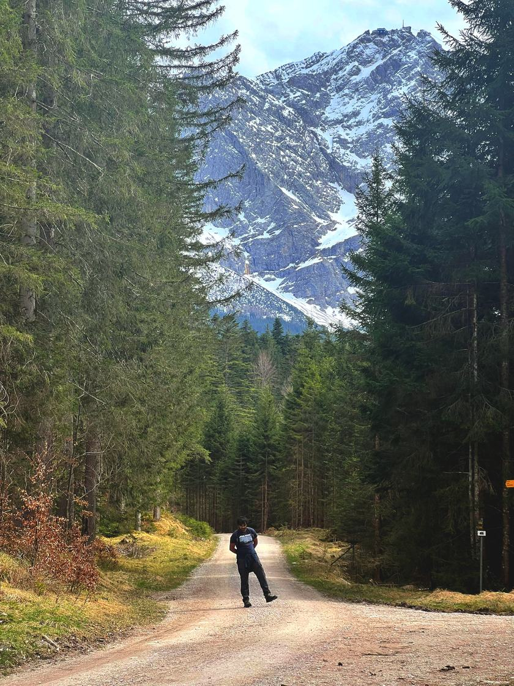

About
I'm a master's student in astrophysics at the University of Potsdam, finishing my thesis at the Leibniz Institute for Astrophysics Potsdam (AIP).
I run hydrodynamic simulations of the jets launched by supermassive black holes, to understand how they heat and stir the hot gas in galaxy groups and clusters.
Before that I spent five months at the Max Planck Institute for Astrophysics in Garching, simulating whether cold gas clouds can survive in the turbulent gas of galaxy clusters. That work became my first paper.
Alongside my studies I work at the GFZ in Potsdam on auroral imagery and magnetometer data, and help look after instruments at Neumayer Station III in Antarctica. I did my bachelor's in physics at Madras Christian College in Chennai.
Research and education
2025–now
Master's thesis research
Leibniz Institute for Astrophysics Potsdam (AIP)
Hydrodynamic simulations of resolved AGN jets in galaxy groups and clusters with Arepo, supervised by Dr. Rainer Weinberger. Checked the idealised initial conditions against halos from IllustrisTNG.
2025
Research intern
Max Planck Institute for Astrophysics, Garching
Athena++ simulations of cold gas clouds in the turbulent intracluster medium, with Dr. Max Gronke and Hitesh Kishore Das. Published in Research Notes of the AAS.
2024–now
Student research assistant
GFZ, Potsdam
Python pipelines for auroral imagery and magnetometer data, and remote monitoring and technical support for instruments at Neumayer Station III, Antarctica. With Dr. Jürgen Matzka.
2024–2025
Student research assistant
Helmholtz-Zentrum Berlin (HZB)
GPU-accelerated micromagnetic simulations of spin waves and skyrmions with BORIS, with Dr. Steffen Wittrock, and a GUI for real-time monitoring of radio-frequency signals in superconducting cavities.
2023–now
2019–2022
BSc Physics
Madras Christian College, Chennai
Graduated with first class honours.
Schools and conferences
2025
WE-Heraeus and NARIT Cosmology School: Galaxies and Beyond
National Astronomical Research Institute of Thailand, Chiang Mai
Selected participant, with travel funded by the Wilhelm and Else Heraeus Foundation and NARIT.
2025
Thinkshop 2025 on feedback in galaxy formation
Leibniz Institute for Astrophysics Potsdam
Member of the local organising committee.
2025
Jürgen Ehlers Spring School on Gravitational Physics
Max Planck Institute for Gravitational Physics, Potsdam
Selected participant.
2024
Beamtime at the FERMI free-electron laser
Elettra Sincrotrone Trieste, Italy
Data collection, analysis and control of the laser in an experiment on magnon propagation.
2021
Online schools
ESCAPE Summer School (LAPP), Code/Astro (Heising-Simons Foundation), ISSAA 2021 (IUCAA)
Data science, research software practice, and an introduction to astronomy and astrophysics.
Skills
Python, C and C++, Bash, Matlab and LaTeX. The simulation codes Arepo, Athena++ and BORIS, run on high-performance computing clusters.